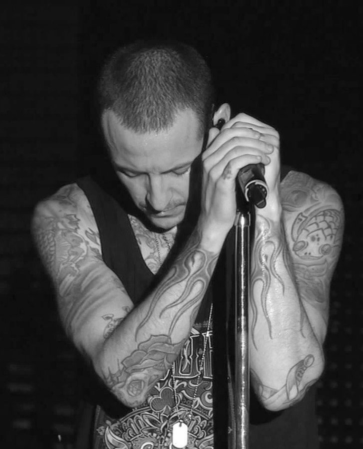

Linha do tempo sobre sua vida
1976
Nasceu em 20 de março, em Phoenix, Arizona
Nasceu em 20 de março, em Phoenix, Arizona
1983
Com idade entre 7 e 8 anos, Chester começou a ser molestado por um amigo mais velho. Ele descreve os abusos como “toques curiosos, até violações completas e malucas”.
Com idade entre 7 e 8 anos, Chester começou a ser molestado por um amigo mais velho. Ele descreve os abusos como “toques curiosos, até violações completas e malucas”.
1987
Seus pais se divorciaram quando ele tinha 11 anos. O abuso e a situação em casa o afetaram tanto que ele sentiu vontade de fugir e matar pessoas. Para se confortar, ele desenhou quadros e escreveu poesias e canções.
Seus pais se divorciaram quando ele tinha 11 anos. O abuso e a situação em casa o afetaram tanto que ele sentiu vontade de fugir e matar pessoas. Para se confortar, ele desenhou quadros e escreveu poesias e canções.
1989
O abuso continuou até os seus 13 anos de idade. Ele tinha medo de pedir ajuda porque não queria que as pessoas pensassem que ele era gay ou mentiroso.
O abuso continuou até os seus 13 anos de idade. Ele tinha medo de pedir ajuda porque não queria que as pessoas pensassem que ele era gay ou mentiroso.
1991
Com cerca de 15 anos de idade, foi convidado a se juntar à banda “Sean Dowdell and his Friends”, que mais tarde passou a se chamar “Grey Daze”.
Com cerca de 15 anos de idade, foi convidado a se juntar à banda “Sean Dowdell and his Friends”, que mais tarde passou a se chamar “Grey Daze”.
1993
Aos 17 anos, foi morar com a mãe. Ele foi proibido de sair de casa por um tempo em que sua mãe descobriu sua atividade com drogas. Ele trabalhou na Burger King antes de iniciar sua carreira como músico profissional.
Aos 17 anos, foi morar com a mãe. Ele foi proibido de sair de casa por um tempo em que sua mãe descobriu sua atividade com drogas. Ele trabalhou na Burger King antes de iniciar sua carreira como músico profissional.
1996
Nessa época, Chester trabalhava no Burger King, e lá conheceu Samantha. Eles se casaram quando ele tinha 20 anos, e nenhum dinheiro para comprar alianças. Por conta disso, eles tatuaram os anéis – um amigo do casal fez as tatuagens de presente pelo casamento e não cobrou.
Nessa época, Chester trabalhava no Burger King, e lá conheceu Samantha. Eles se casaram quando ele tinha 20 anos, e nenhum dinheiro para comprar alianças. Por conta disso, eles tatuaram os anéis – um amigo do casal fez as tatuagens de presente pelo casamento e não cobrou.
1999
Chester foi o último membro a juntar-se à banda Xero, que depois mudou seu nome para Hybrid Theory, e por causa da existencia de uma banda com esse nome tiveram de mudar novamente. Linkin Park é uma adaptação de Lincoln Park, lugar por onde Chester passava após os ensaios com a banda.
Chester foi o último membro a juntar-se à banda Xero, que depois mudou seu nome para Hybrid Theory, e por causa da existencia de uma banda com esse nome tiveram de mudar novamente. Linkin Park é uma adaptação de Lincoln Park, lugar por onde Chester passava após os ensaios com a banda.
1999 a 2017
Durante seu tempo com o Linkin Park, foram sete álbuns de estúdio gravados e mais de 70 milhões de cópias vendidas, além de dois prêmios Grammy recebidos.
Durante seu tempo com o Linkin Park, foram sete álbuns de estúdio gravados e mais de 70 milhões de cópias vendidas, além de dois prêmios Grammy recebidos.
2017
O porta-voz do Departamento Forense de Los Angeles informou que o cantor cometeu suicídio por enforcamento em uma residência privada na cidade de Palos Verdes Estates, próximo à Los Angeles, aproximadamente às 9 horas do dia 20 de julho de 2017.
O porta-voz do Departamento Forense de Los Angeles informou que o cantor cometeu suicídio por enforcamento em uma residência privada na cidade de Palos Verdes Estates, próximo à Los Angeles, aproximadamente às 9 horas do dia 20 de julho de 2017.
Eu tentei tanto e cheguei tão longe
Mas no fim, isso não tem mais importância
Eu tive que cair, que perder tudo
Mas no fim, isso não tem mais importância